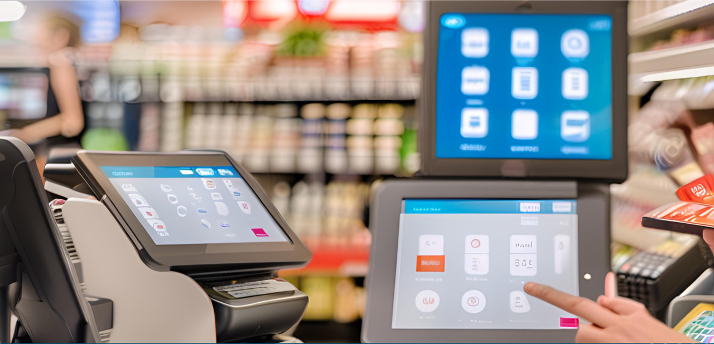
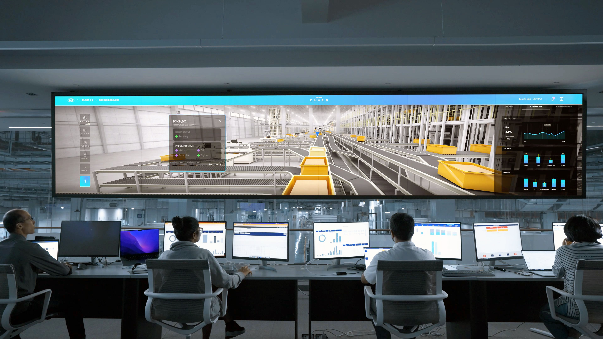

Cuando una empresa crece y su operación se distribuye en distintas ubicaciones, también crecen los retos para el área de TI.
Mantener la continuidad de la operación, coordinar proyectos en todo el país, responder rápidamente ante incidentes y asegurar que cada sitio funcione como debe requiere mucho más que tecnología. Necesita un aliado que entienda tu operación.
Por eso diseñamos cada servicio a partir de un reto concreto: el que hoy le quita el sueño a tu área de TI. Elige el que se parezca más a tu situación y descubre cómo lo resolvemos.

Cuando una nueva sucursal debe comenzar a operar o la conectividad tradicional no está disponible, contar con una alternativa rápida y confiable hace toda la diferencia. Habilita conectividad para aperturas, enlaces de respaldo, sitios temporales o ubicaciones donde no es posible instalar fibra óptica.
Conoce Internet Celular AdministradoTu equipo de TI no puede estar en todas partes. Nos convertimos en los ojos y las manos de tu área de TI para ejecutar instalaciones, migraciones, reemplazos de equipos, auditorías y otras actividades técnicas siguiendo tus procesos y estándares.
Conoce Ingeniería de CampoUna red confiable es la base de una operación estable. Diseñamos, implementamos y administramos infraestructura LAN preparada para soportar las necesidades actuales y futuras de tu empresa.
Conoce Redes LANLa conectividad inalámbrica forma parte de la experiencia diaria de colaboradores, clientes y aplicaciones críticas. Implementamos soluciones WiFi que ofrecen estabilidad, seguridad y el desempeño que tu operación necesita.
Conoce WiFi de Alto Desempeño
Obtén mayor visibilidad, flexibilidad y control sobre la conectividad de tus sucursales. Nuestras soluciones SD-WAN ayudan a optimizar el desempeño de la red y simplificar su administración.
Conoce SD-WANIndependientemente de la solución que tu empresa necesite, siempre encontrarás la misma forma de trabajar.
Una experiencia consistente en cualquier parte de México, con procesos certificados bajo ISO/IEC 20000.
Monitoreo, coordinación y seguimiento de cada atención.
Te mantenemos informado durante cada atención.
"Porque creemos que la calidad de un servicio debe ser la misma, sin importar dónde se encuentre tu operación."
No siempre la respuesta está en un solo servicio. Cada empresa tiene una operación diferente y enfrenta retos particulares. Conversemos sobre tus necesidades: juntos podemos identificar la estrategia que mejor se adapte a tu infraestructura y a los objetivos de tu negocio.
Hablemos de tu operación